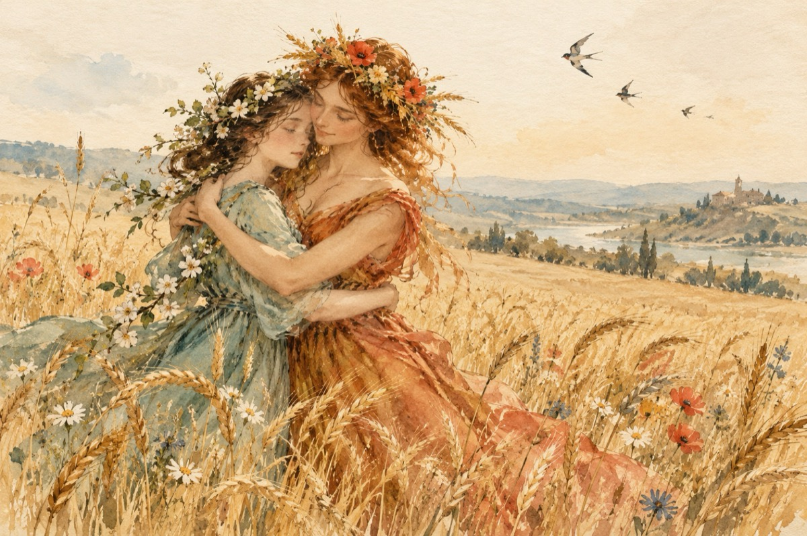

Primăvara e pe ducă
Primăvara e pe ducă
A luat-o vara-n brațe.
Ca să umble-atentă-n luncă
Și prin grâne să se-nvețe.
Colo-n luncă iarba-i deasă,
S-a-nălțat și dă în spic,
S-a făcut bună de coasă,
Păsările cântu-și zic!...
Primăvara e prin grâne,
Vara-ncepe să le coacă.
Din care v-om face pâine,
Este a naturii joacă!
Și-uite-așa o-ntreagă vară,
Roadele le-a scos la soare.
Vara zice că-i bogată,
Toamna bucuroasă o așteaptă pe cărare!...
P. S. Cele trei surori de mână
Și cu iarna mai geroasă
Călătoresc împreună
Și-s mereu în AN acasă!...
Vasile Groza